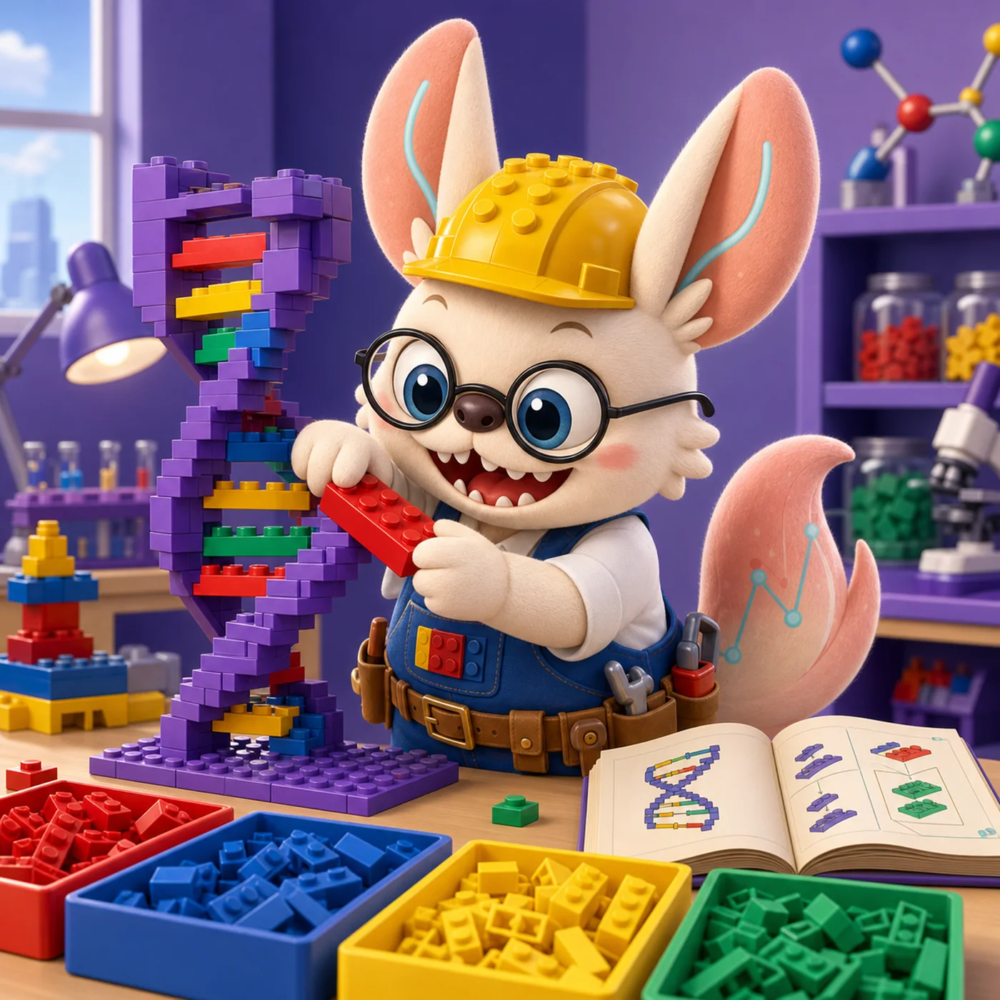
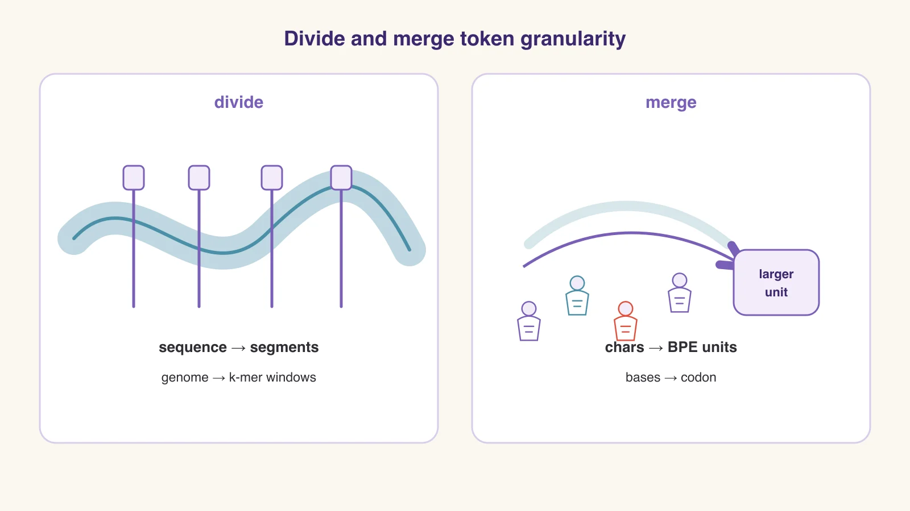
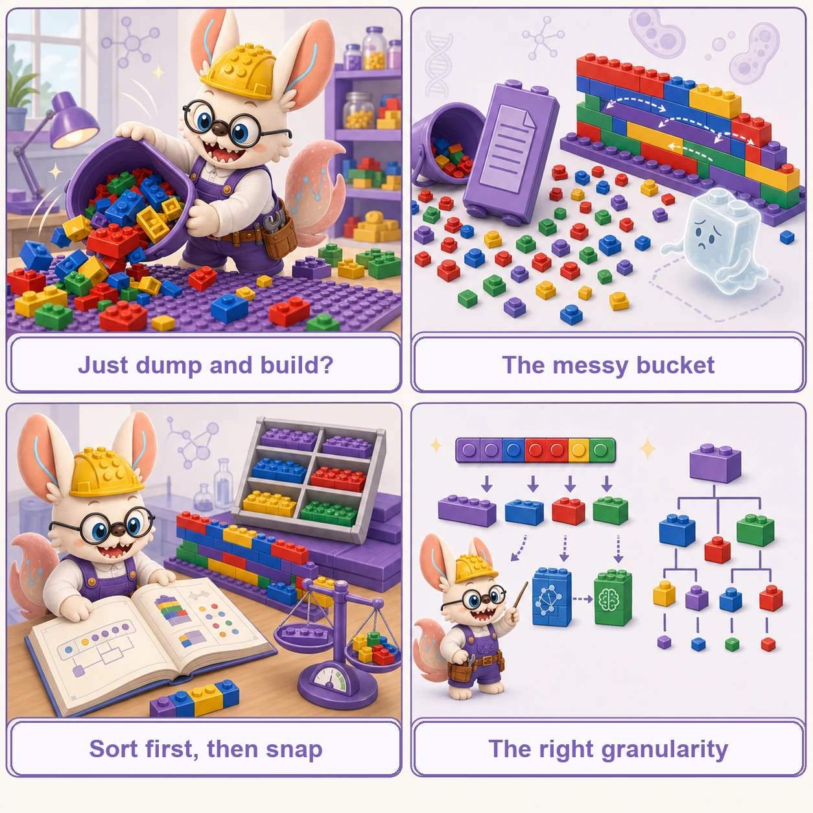
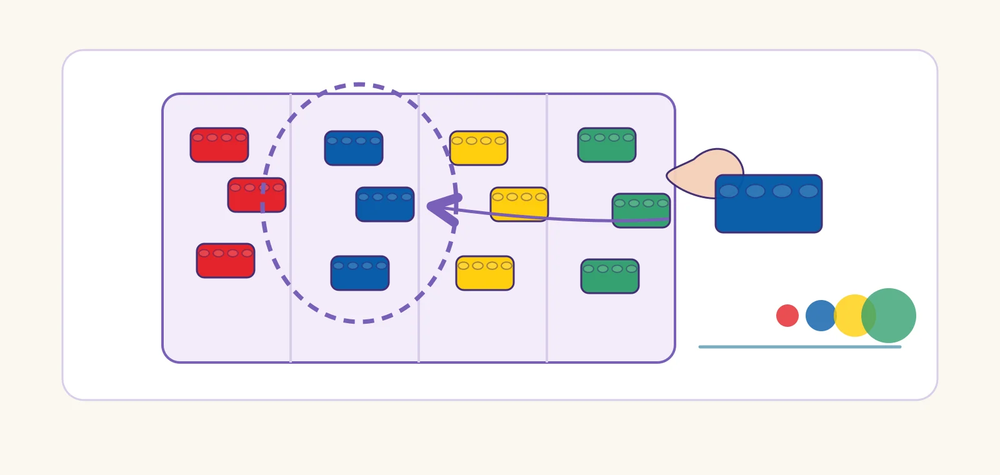
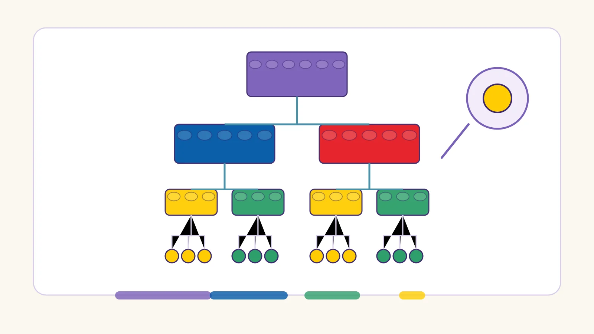

Tokenization Strategies
Translating Biology into AI-Readable Language
Understanding how biological data is converted into tokens is fundamental to building effective foundation models. This guide explores the major tokenization strategies used in single-cell multi-omics, protein modeling, and DNA sequence analysis, using intuitive LEGO analogies to make these concepts accessible.

No castle without a parts list.
Every LEGO castle begins before the first brick snaps in — with someone deciding which pieces exist and in what order. Tokenization is that decision for AI: how a messy bucket of biology becomes a neat line of parts a model can build with.

Split, Then Snap.
「先分件，再拼装。」— Every LEGO build starts with sorting the bucket.
No builder dumps the bucket straight onto the table and hopes for a castle. You sort first: decide which units exist, in what order, at what size. Tokenization is exactly that sorting step for AI — six scenes from the workbench, re-read as tokenization strategies.

No build without a plan
Every LEGO set opens with the instruction booklet: before a single brick is placed, someone has already decided which pieces exist and in what order they connect.
Tokenization itself. The plan that turns a messy bucket into a buildable sequence — without it, the model has a pile, not a project.
Three bricks, one click
Three small bricks click together and hold as one larger piece. The wall no longer cares about the three — only about the unit they became.
Codon-level tokenization. Three nucleotides snapped as one codon, read as a single functional unit. See the codon strategy ↓
Pick from the tray, don't mold new bricks
A master builder rarely molds custom pieces. They reach into the sorting tray and reuse the common bricks that fit everywhere — cheaper, faster, and the castle stands the same.
BPE / subword units. Don't mint a token for every word; pick the frequent reusable pieces already lying in the corpus. See BPE ↓
The wrong page of instructions
You follow the booklet faithfully, step by step — but it is the page from a different set. Every brick clicks perfectly, and the wrong castle rises anyway.
Garbage tokens in, garbage out. A wrongly segmented unit poisons everything downstream — tokenize wrong, and the model builds confidently on a false plan.
A wall laid with offset bricks
Each course overlaps the last by half a brick: stronger than stacked columns — but you spend far more bricks to cover the same wall.
K-mer tokenization. Overlapping windows chained across the sequence: continuous coverage, redundancy that burns budget. See k-mer ↓
When a piece is missing
One big custom piece missing stops the whole build. The tiniest universal brick is never out of stock — slow, but it always fits.
Byte-level tokenization. The smallest unit never goes OOV: full coverage and zero missing pieces, at the price of very long builds. See trade-offs ↓

按任务选套装：没有最好的粒度，只有合适的套装 —— the right tokenization is the set your task can build with.
The Problem: Biology is Messy, AI Needs Order
The LEGO Analogy: Imagine a single cell as a giant bucket full of unsorted LEGO bricks.
Each type of brick (color/shape) represents a different Gene.
The number of bricks of that specific type represents its Expression Level (how active that gene is).
An AI model (like a Transformer) is a master builder, but it can't just grab a handful from the messy bucket. It needs the bricks sorted, labeled, and handed to it in a specific sequence. Tokenization is the process of organizing that messy bucket into a neat line of inputs the builder can use.
Depending on what we want the model to learn, we use different strategies to sort and present these "bricks".
Visual Guide to Core Tokenization Concepts
Before diving into the details, let's understand the core concepts visually using our LEGO analogy.
The Basics: Identity & Count
A token is a single unit of information for the model. In single-cell data, we usually need two pieces of information combined:
- What is it? (The Gene Identity, e.g., "TP53" or a red brick).
- How much? (The Expression Value, e.g., "50 counts" or a stack of 50 bricks).
The challenge is how to combine these two very different types of information into a single vector representing the token.
Strategy: Rank-Based Tokenization
The Problem: Sometimes we have "technical noise" (batch effects). One experiment might yield giant stacks of bricks (high sequencing depth), and another yields tiny stacks, even for the same biological cell type.
The Solution: Ignore the exact height. Just line them up from tallest to shortest. As long as the relative order is preserved (Red is taller than Blue), the resulting sequence of tokens is the same, making the model immune to batch differences in sequencing depth.
Strategy: Expression Binning
The Problem: Standard language models work best with a fixed dictionary of words (categorical data). Actual expression counts are continuous numbers (1, 2, 50, 1000...).
The Solution: We create buckets (bins) for different ranges of heights. Instead of saying "Height 45", we throw it into the "Medium Height Bucket". Now, the token isn't a number, it's a category: [GeneID] + [MediumBin].
Strategy: Read-Depth-Aware (RDA) Tokenization
The Problem: Different cells have different sequencing depths—some have 10,000 total counts, others only 1,000. This makes expression values hard to compare directly.
The Solution: Keep the continuous expression values (don't discretize!), but add special "depth tokens" that tell the model: "This cell was supposed to have T=10,000 counts, but we only sampled S=1,000." The model learns to mentally "scale up" the values during pretraining.
Key Benefit: Enables expression enhancement—the model can predict what gene expression would look like at higher sequencing depth, effectively denoising sparse data.
Strategy: Genome-Coordinate Tokenization
The Problem: In chromatin data (ATAC-seq), we don't have predefined "genes". We just have regions on the genome that are "open" (accessible). These regions change depending on the cell type.
The Solution: Imagine the genome as a giant LEGO baseplate ruler. We don't define the brick type; we define where the bricks are placed. The token isn't a name, it's a set of coordinates: Chromosome number, Start position on the ruler, and End position.
Strategy: Cell2Sentence (C2S)
The Idea: Instead of stacking bricks to show expression level, lay them out in a horizontal line. High expression? Repeat that brick many times. Low expression? Just one or two repeats.
Why It Matters: This transforms cell data into text-like "sentences" that standard large language models (GPT, LLaMA) can understand. You can even ask natural language questions about cells!
Strategy: Amino Acid Tokenization
The Idea: Proteins are chains of just 20 different building blocks (amino acids). Each amino acid is one token - like having 20 different LEGO brick types that snap together in a chain.
Why It Works: Just like language models learn word patterns ("the" often follows "in"), protein models learn amino acid patterns that determine protein function and structure.
Strategy: Codon-Level Tokenization
The Idea: Instead of tokenizing single DNA letters (A, T, G, C), group them into triplets called codons. There are 64 possible triplet combinations (4^3).
Why It Matters: Multiple codons can code for the same amino acid (synonymous codons), but the choice affects translation speed and mRNA stability. "Silent" mutations can still cause disease!

Strategy: BPE + IUPAC Encoding for Diploid Genomes
The Problem: Reference genome models ignore individual genetic variation. How do you encode personalized genomes with heterozygous variants (where you inherited different alleles from each parent)?
The Solution: Use IUPAC ambiguity codes to represent heterozygous sites directly in the sequence (e.g., Y for C/T, R for A/G). Then apply Byte-Pair Encoding (BPE) to learn variable-length subword tokens that capture regulatory motifs.
Why It Works: This enables native diploid genome modeling without separate haplotype processing. The model learns the biological significance of both homozygous and heterozygous positions.
Strategy: K-mer Tokenization
The Idea: Instead of reading DNA one letter at a time (A, T, G, C), slide a window of K letters along the sequence. Each window position becomes one token. For 6-mers, there are 4^6 = 4,096 possible tokens.
Why It Works: It's like reading words instead of individual letters. "ATGCAT" carries more biological meaning than six separate letters, capturing local motifs and regulatory elements.
Strategy: Macrogene Tokenization
The Idea: Instead of using individual genes as tokens, group genes from ALL species into "macrogenes" based on protein sequence similarity (via ESM2). This creates a universal vocabulary that works across species.
Why It Works: Genes with similar protein functions cluster together regardless of species, enabling cross-species integration WITHOUT requiring one-to-one homolog mappings. Human CD4 and mouse Cd4 end up in the same macrogene!
Key Papers Implementing These Strategies
iSEEEK: Integration via Gene Rankings
Tokenization Strategy
Top 126 expressing genes per cell, ranked by expression level. Uses [CLS] and [SEP] tokens with MLM objective. Vocabulary: 20,706 protein-coding genes.
Scale: 11.9M cells | Context: 128 tokens | Params: ~10M
scGPT: Multi-task Foundation Model
Tokenization Strategy
Gene tokens paired with binned expression values (51 bins). Special condition tokens for perturbation modeling. Context limited to ~1,200 most variable genes.
Scale: 33M cells | Context: 1,200 | Params: ~100M
Nicheformer: Spatial-Aware Foundation Model
Tokenization Strategy
Rank-based with technology-specific mean normalization. Contextual tokens: <ORGANISM>, <ASSAY>, <MODALITY>. Cross-species gene mapping via orthologs.
Scale: 110M cells | Context: 1,500 | Params: 49.3M
ChromFound: scATAC-seq Foundation Model
Tokenization Strategy
Chromosome embedding + sinusoidal positional encoding of genomic coordinates (start/end). Linear accessibility embedding. Vocabulary-free approach for dynamic OCR landscapes.
Scale: 1.97M cells | Context: 440K OCRs | Params: 450K
ESM3: Multimodal Protein Language Model
Tokenization Strategy
Separate token tracks for sequence (amino acids), structure (discrete autoencoder), and function (keywords from InterPro/GO). All modalities fused in shared latent space with masked language modeling.
Scale: 2.78B proteins | Context: Sequence + 3D Structure | Params: 1.4B-98B
C2S-Scale: LLM-Scale Single-Cell Foundation
Tokenization Strategy
Cell2Sentence: expression encoded via token repetition (high expr = more repeats). GRPO refinement for biological task optimization. 8,192 token context.
Scale: 5.7M cells | Context: 8,192 | Params: 157M-27B
ProGen2: Protein Language Model Scaling
Tokenization Strategy
Standard amino acid tokenization with rotary positional encodings. Causal language modeling with next-token prediction. Context: 1,024-2,048 tokens.
Scale: UniRef90+BFD | Context: 2,048 AAs | Params: 151M-6.4B
VariantFormer: Personalized Gene Expression from Diploid Genomes
Tokenization Strategy
IUPAC ambiguity codes for heterozygous sites (R=A/G, Y=C/T, etc.) embedded into reference genome. BPE tokenizer (500 vocab) trained on cCREs. Hierarchical cross-attention between CRE (±1Mb) and gene body windows.
Scale: 2,330 donors, 50K genes | Context: >2Mb | Params: 1.2B
SATURN: Universal Cross-Species Embeddings
Tokenization Strategy
Genes clustered into ~2000 macrogenes via k-means on ESM2 protein embeddings (5120-dim). Gene-to-macrogene weights learned from protein similarity. Enables 350M-year divergent species integration.
Scale: 335K cells (3 species) | Context: ~2,000 macrogenes | Params: ~10M
Comparisons & Trade-offs

Every granularity level buys something and pays for something:
1×1 小颗粒 · Smaller units char / byte / base
✓ Zero OOV — every sequence is coverable; compositional generalization
✗ Very long sequences; almost no meaning per token; attention gets expensive
2×4 标准砖 · Middle units subword / codon / k-mer
✓ The working balance: coverage, real semantics, manageable vocabulary
✗ You must tune the knobs — merge count, k, overlapping redundancy
大板与定制件 · Larger units word / gene / macrogene
✓ Short sequences; every token carries real meaning
✗ OOV and batch-dependence; rare or novel units silently vanish
底板格点与塔高 · Value-free units rank / coordinate
✓ Batch-proof and vocabulary-free; robust across datasets
✗ Absolute magnitude is gone — 50 vs 5 becomes just 1st vs 2nd
连接件与底板 · Special tokens [CLS] / [SEP] / [MASK]
Content tokens carry meaning; special tokens carry the structure that makes meaning readable — invisible in the castle photo, but nothing snaps together without them:
[CLS] = 说明书封面的总览图 — the single overview picture that summarizes the whole build (classification & sequence embedding)
[SEP] = 房间隔断砖 — divider bricks that split one build into readable rooms (segment boundaries)
[MASK] = 被遮住的那一格 — a covered slot the model must guess from the surrounding bricks (where the learning signal comes from)
The table below is the same trade-off, one strategy at a time:
Tokenization Strategy Comparison
| Strategy | Data Type | Key Advantage | Limitation | Representative Model |
|---|---|---|---|---|
| Gene Rank-Based | scRNA-seq | Batch-insensitive, captures relative expression patterns | Loses absolute expression magnitude | iSEEEK, Geneformer |
| Expression Binning | scRNA-seq | Preserves expression magnitude, compatible with NLP architectures | Information loss from discretization | scGPT, scBERT |
| Genome-Coordinate | scATAC-seq | Vocabulary-free, handles novel regions | Requires reference genome alignment | ChromFound |
| K-mer Tokenization | DNA sequences | Captures local sequence patterns | Large vocabulary (4^k tokens) | Nucleotide Transformer |
| BPE + IUPAC | Diploid DNA + Variants | Native heterozygous encoding; personalized genome modeling | Requires phased VCF; expanded alphabet | VariantFormer |
| Amino Acid + Multimodal | Protein sequences + structure + function | Simple sequence tokens; multimodal enables structure/function reasoning | Ignores codon usage effects | ESM3, ProGen2 |
| Cell2Sentence | scRNA-seq | Compatible with standard LLMs, enables NL queries | Long sequences from repetition encoding | C2S-Scale |
| Macrogene | scRNA-seq (cross-species) | Enables cross-species integration without homologs via protein embeddings | Requires reference proteomes; loses gene-level resolution | SATURN |
Context Length vs Model Scale Trade-offs
Different tokenization strategies and architectures dictate the maximum sequence length (context window) a model can handle, which impacts the biological scope it can capture.
| Model | Tokenization Strategy | Context Length | Parameters |
|---|---|---|---|
| iSEEEK | Rank-Based (Top-K) | 128 tokens | ~10M |
| scGPT | Binning (High Variance Genes) | ~1,200 genes | ~100M |
| Nicheformer | Rank-Based (Top-K) | 1,500 tokens | 49.3M |
| AIDO.Cell | Auto-Discretization (Full Transcriptome) | 19,264 (full) | 650M |
| ChromFound | Genome-Coordinate (OCRs) | 440K OCRs (via Mamba) | 450K |
| ESM3 | Amino Acid + Structure + Function | Full protein (multimodal) | 98B |
| VariantFormer | BPE + IUPAC (Diploid) | >2 Mb (CRE ±1Mb + gene body) | 1.2B |
| C2S-Scale | Cell2Sentence (Repetition) | 8,192 tokens | 27B |
| SATURN | Macrogene (ESM2-based) | ~2,000 macrogenes | ~10M |
Choosing the Right Tokenization Strategy
| Use Case | Recommended Strategy | Why |
|---|---|---|
| Large-scale integration (>1M cells) across many labs | Gene Rank-Based | Naturally batch-insensitive; focuses on robust relative signals. |
| Perturbation modeling (predicting gene knockout effects) | Expression Binning | Preserves the absolute expression magnitude needed to model dosage changes. |
| Chromatin accessibility analysis (scATAC-seq) | Genome-Coordinate Tokenization | Handles dynamic open chromatin regions varying across cell types without a fixed vocabulary. |
| Protein fitness or structure prediction | Amino Acid Tokenization | Standard approach that effectively captures evolutionary constraints in protein sequences. |
| Personalized gene expression prediction from WGS | BPE + IUPAC | Encodes heterozygous variants natively; enables variant effect prediction from individual genomes. |
| Interacting with cell data using natural language | Cell2Sentence | Converts biological data into a format understood by standard Large Language Models. |
⚖️ Side-by-Side: Encoding Expression — Rank Ordering vs Value Binning
Geneformer and scGPT both turn a single cell's expression vector into a token sequence a transformer can read, but they diverge on the fundamental question: should a gene's expression level be encoded implicitly by its rank among the other genes (Geneformer), or explicitly as a discrete value token paired with the gene (scGPT)?
The same starting point — one cell's gene-by-count vector — becomes two very different token streams depending on how expression magnitude is represented:
The split traces back to one root decision — rank ordering vs value binning. Geneformer discards absolute magnitude (50 vs 5 collapses to just 1st vs 2nd), which makes it naturally depth- and batch-robust but blind to dosage; scGPT keeps magnitude as an explicit token, which is exactly what perturbation and dosage modeling need but leaves it sensitive to normalization and batch. Vocabulary size, sequence length, and out-of-vocabulary behavior all follow from that one choice.
Up a Level: Cells as Tokens — STACK vs STATE
The two models above tokenize genes within a cell. STACK and STATE (both from the Arc Institute) move up a granularity — the token is the whole cell, and attention runs over a set or table of cells. They diverge on how a set of cells becomes a perturbation prediction: STACK learns in context from unlabeled example cells at inference, while STATE trains an explicit embedding-plus-transition pipeline.
The same set of cells becomes a perturbation prediction two different ways — by learning in context at inference, or by a separately trained transition operator:
The root decision here is in-context learning from example cells vs a separately trained embedding-and-transition pipeline. Both treat the cell (not the gene) as the token and attend across a set of cells — a step up in granularity from the gene-level tokens above. STACK trades a training step for flexible, fine-tuning-free generalization to new conditions; STATE's dedicated transition model gives an explicit control→perturbed operator built specifically for perturbation-effect prediction.
🛠️ Hands-On Practice
The steps below walk through tokenizing a single-cell dataset for a transformer foundation model — from an AnnData count matrix to two model-ready token streams: a rank-ordered sequence (Geneformer-style) and a (gene, value-bin) sequence (scGPT-style). The core logic is shown from scratch in NumPy so the mechanics are transparent, then mapped to the real library call.
Environment & packages
Install a minimal tokenization stack. scanpy/anndata hold the matrix; the model-specific tokenizers (Geneformer's TranscriptomeTokenizer, scGPT's GeneVocab) emit the final token IDs and handle the gene vocabulary, special tokens, and truncation.
# conda / mamba recommended
conda create -n tok python=3.10 -y
conda activate tok
pip install scanpy anndata numpy datasets
# model-specific tokenizers:
pip install geneformer # rank-value encoding (expects Ensembl IDs)
# pip install scgpt # value binning (GeneVocab tokenizer)Hardware. Tokenization is CPU-bound and cheap — a laptop handles 100k+ cells. A GPU is only needed for the downstream model forward pass, not for building the token streams.
Data structures & formats
AnnData— input:adata.X(raw counts),adata.var["ensembl_id"](Geneformer keys on Ensembl IDs, not symbols),adata.obs["n_counts"](total counts per cell)- Token dictionary — a fixed
gene → integer IDvocabulary; genes absent from it are out-of-vocabulary and silently dropped - Rank-encoded sequence — an ordered list of gene token IDs per cell (no value tokens), truncated to the model context length (2,048 for Geneformer)
- Value-binned sequence — aligned arrays of gene token IDs and discrete value-bin IDs (e.g. 51 bins) per cell
- Special tokens —
<cls>(cell-level embedding),<pad>(padding to a fixed length),<mask>(masked-token pretraining objective) - Output — Geneformer emits a HuggingFace
.dataset(Arrow) of token IDs; scGPT works from tensors of(gene_ids, values)
Minimal code walkthrough
Encode a toy count matrix with both strategies to expose the mechanics, then map to the real Geneformer tokenizer.
import numpy as np
# Toy: 3 cells x 6 genes (raw UMI counts). In practice: adata = sc.read_h5ad(...)
genes = np.array(["CD3D", "MS4A1", "GAPDH", "NKG7", "LYZ", "ACTB"])
counts = np.array([[12, 0, 40, 3, 0, 30],
[ 0, 25, 35, 1, 18, 22],
[ 5, 0, 50, 9, 2, 28]], dtype=float)
# ---------- Strategy A: rank-value encoding (Geneformer-style) ----------
# 1. Normalize each gene by its NON-ZERO median across the corpus. This
# down-weights housekeeping genes that are uniformly high (GAPDH, ACTB).
nz = np.where(counts > 0, counts, np.nan)
gene_median = np.nanmedian(nz, axis=0)
norm = counts / gene_median
# 2. Per cell, rank genes by normalized expression high -> low; drop zeros.
def rank_encode(cell):
idx = np.where(cell > 0)[0]
return genes[idx[np.argsort(-cell[idx])]].tolist()
for i in range(counts.shape[0]):
print(f"cell {i} rank tokens:", rank_encode(norm[i]))
# -> ordered gene tokens only; magnitude lives in POSITION, no value token.
# ---------- Strategy B: value binning (scGPT-style) ----------
N_BINS = 5 # scGPT uses ~51 in practice
def value_bin(cell):
idx = np.where(cell > 0)[0]
vals = np.log1p(cell[idx])
ranks = vals.argsort().argsort() # per-cell quantile rank
bins = np.floor(ranks / len(idx) * N_BINS).astype(int)
return list(zip(genes[idx].tolist(), bins.tolist()))
for i in range(counts.shape[0]):
print(f"cell {i} (gene, bin):", value_bin(counts[i]))
# -> aligned (gene token, value-bin token) pairs; magnitude is explicit.In production you would not hand-roll this — the model ships a tokenizer that also handles the gene vocabulary, special tokens, and truncation:
from geneformer import TranscriptomeTokenizer
# adata must carry raw counts, adata.var["ensembl_id"], adata.obs["n_counts"].
tk = TranscriptomeTokenizer({"cell_type": "cell_type"}, nproc=4)
tk.tokenize_data(
"data_dir/", # folder of .h5ad / .loom files
"output_dir/",
"tokenized", # output prefix
file_format="h5ad",
)
# -> output_dir/tokenized.dataset : rank-ordered token IDs per cell,
# median-normalized internally and truncated to 2,048 genes.Common pitfalls & tips
- Gene ID system mismatch. Geneformer's vocabulary is keyed on Ensembl IDs, not gene symbols — map symbols → Ensembl before tokenizing, or most genes become OOV and vanish.
- Wrong normalization state. Geneformer expects raw counts and median-normalizes internally; scGPT expects normalized/log1p input. Double-normalizing (feeding already-log-normed data to Geneformer) corrupts the ranking.
- Check vocabulary coverage. Any gene not in the token dictionary is dropped silently; a low-overlap panel (targeted or non-human data) can lose most of its signal before the model sees a single token. Log the fraction of counts retained.
- Sequence-length truncation drops the tail. Rank encoding keeps only the top ~2,048 genes; lowly expressed but biologically important genes fall off the end, and sparse cells yield short, padding-heavy sequences.
- Value bins are per-cell and relative. "Bin 50" in one cell is not the same absolute expression as "bin 50" in another — binning is computed within each cell, so depth and batch effects shift the mapping; don't compare raw bin IDs across cells.
- Don't forget special tokens. The
<cls>position carries the cell-level embedding and<pad>must be masked in attention; omitting or mis-placing them silently degrades every downstream readout.